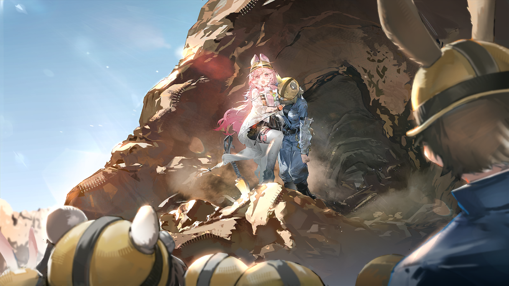

严肃的负责人
K3号管线井疑似塌方，井下连接中断，两人被困......
严肃的负责人
那口管线井正好在采矿沉陷区，几年前还做过补强，按说不应该出事故。
严肃的负责人
但现在全雷姆必拓的源石矿都在增产，怕不是哪个混蛋被钱迷了眼，把附近的支撑用矿柱给凿了，才会出这种事......
严肃的负责人
算了，追责是之后的事。现在救人要紧。管线井先出问题也总比采空区出问题要好点。
负责人重重叹了口气，目光从三人脸上挨个扫过去。
严肃的负责人
我知道卡特斯天生就不把下井和钻洞当回事，这次事故的起因也跟塔妮小姐没关系，但她现在毕竟是被困了。
严肃的负责人
作为她的朋友，你们几位的来头一个比一个大，你们倒是说说，现在想怎么办？

安洁莉娜
太阳谷不追究我们的责任就已经是万幸了，我想罗德岛、坎贝尔家和纵贯红土公司更不会反过来追究别的事情。
安洁莉娜
至于怎么办......
安洁莉娜
经阿梅利亚的改造，我们四人的终端都能接入远程通讯系统，而我听矿工说过，通讯塔特地为矿井做过信号增强——
安洁莉娜
请允许阿梅利亚小姐现在就去维修通讯塔，这样就可以联系上被困的人了！
严肃的负责人
......行吧。我叫几个人来给你们带路。

健硕的矿工
巴顿先生，情况我们都听说了。
严肃的负责人
好，那我不用解释了。
健硕的矿工
哪位是来维修的工程总监？

阿梅利亚
是我——

阿梅利亚
——呜啊，我我我自己会跑，别把我扛在肩膀上跑，我我我我恐高啊！

太阳谷联络员
（高声）——还要帮什么忙都可以来找我啊，几位小姐！

塔妮
呼——呼——别紧张，别紧张塔妮！只是前面的路塌方了，你没有事，你没有受伤！

塔妮
我我我现在应该做什么？对，先联系安洁莉娜，她在上面会通知其他人，帮忙想办法的！

塔妮
怎么办怎么办，怎么会在这个时候坏掉？啊啊，还有那个维修工，她肯定被困在下面了！
塔妮一急，又忍不住开始跺起脚来。
安静的地下通道中原本只有她自己一个人的声音，此刻呼应着她的跺脚声，一阵凌乱的声音从地下隐隐地传来。

塔妮
——等一下，我好像听到了什么声音......？
咚咚、咚、咚咚咚！

塔妮
好像是跺脚的声音......很混乱，很慌张......
塔妮
是那个维修员发出来的吗......？
塔妮站在漆黑一片的通道里有些紧张。
她忍不住开始想，如果是奶奶在这里，奶奶会怎么做？
塔妮
奶奶一定会用她超级厉害的源石技艺一下子就打开一条道路，把人救出来！可我不像奶奶这么厉害，我什么都不会......
塔妮
我浑身上下只有耳朵像奶奶......欸，耳朵？
咚咚、咚、咚咚咚！
隐隐传来的跺脚声像是催促，又像是鼓励。
塔妮猛地竖起耳朵，认真分辨着声音传来的方位。
塔妮
......“那个小卡特斯和你一样，喜欢跺脚，可她没有学会求救的信号要怎么跺，只好急急忙忙乱跺一通”......
塔妮
“奶奶把耳朵贴在地上，听到了这个声音，就知道有一个像你一样的小卡特斯困在下面啦。”——那个人一个人在下面一定很害怕！
塔妮
虽然我、我也很害怕......但我从家里跑出来，不就是一直想做到点什么吗？
塔妮
我的背包可以保护我，我的听力很好，现在没有通讯，但说不定我能找到她在哪里！

塔妮
塔妮，相信自己，你有能力做到点什么的！
塔妮
你、你可以先去找到那个维修员，让她不要那么害怕！
健硕的矿工
要工具箱是吗？给！
强壮的矿工
够不到上面的螺丝？我来！

阿梅利亚
主柱无裂缝和弯曲，天线安装牢固，避雷接地的电阻值在规定范围内......
阿梅利亚
快一点，我得再快一点——
阿梅利亚
这次绝对不能出错......！
阿梅利亚手脚麻利地操作着，时间一分一秒地过去。

阿梅利亚
好，新的通讯核心更换好了！

嘉辛塔
太好了阿梅！
严肃的负责人
好，我已经把消息告诉了负责救援的矿工，他们已经在试图进入管线井了。
阿梅利亚
只是通讯效果还没有经过测试，可能不太稳定......

安洁莉娜
塔妮，塔妮，拜托了，快接通讯......

塔妮
奇怪，这里怎么有这么多岔路......？
塔妮
声音是从这里传来的，没错，顺着这条路下去应该就是维修员小姐所在的地方！
塔妮
欸？这里怎么有个坑......
安洁莉娜的声音
——滋滋啦啦......塔妮！......你......哪里？
塔妮
安洁莉娜？
安洁莉娜的声音
是我！塔妮，你怎么样？
乱糟糟的声音
......打通了？快让她回来，下面岔路很多......

塔妮
——回去？不行，我——
乱糟糟的声音
等等，扫描上看......她走的路是对的！......

塔妮
嘿嘿，对吧！
乱糟糟的声音
只需要再往下......你让她再往下走，遇到岔路左转，就能找到那个维修员了......！
塔妮
往下，左转......
安洁莉娜的声音
塔妮你听到了吗？我就在上面等你......还有嘉辛塔——还有阿梅！
安洁莉娜的声音
管线井的应急出口也都清理好了确保绝对安全，医疗人员和救援人员也都已经到了！
安洁莉娜的声音
加油加油！我们相信你一定能做到的！
塔妮
嗯！
咚咚咚，咚，咚咚！
像是听到了上方传来的声音，下面的跺脚声突然加快了速度。
塔妮
找到了，就是这里了！
塔妮
唔，好小的缝隙——还好还好，我挤得进去！
太阳谷维修员
唉，好像上面又没有声音了，果然，刚才应该就只是坍塌的声音......
太阳谷维修员
通讯断了，胳膊的状况好像也有点严重，我还是老老实实等待救援吧，说不定还能被发现......
太阳谷维修员
唉，这次还会有人像小时候那样把我救出去吗......？
太阳谷维修员
那个又温柔又帅气的奶奶......

伊娜拉
啊，找到你了，没有学会跺求救信号的孩子。
伊娜拉伸出手摸了摸眼前这个浑身是泥的小卡特斯，手掌上粗糙的茧蹭得她忍不住又哭了起来。

伊娜拉
这么小的年纪就能挖出来这么长的一个洞，你很厉害呢。
伊娜拉
好了，趴到我的背上吧，我带你出去。
小卡特斯在伊娜拉的背上扭来扭去，一把抓住了伊娜拉的耳朵，像是终于安心下来了一样，不再抽抽噎噎。

伊娜拉
哈哈，也好，那你就抓紧点，别掉下去！
太阳谷维修员
那双短短的又毛茸茸的耳朵......
太阳谷维修员
我、我好像又看到了那双耳朵......真的是一模一样啊......
“记忆中的短耳朵”
啊，找到你了，没有学会跺求救信号的维修员小姐！
太阳谷维修员
我是已经疼晕过去了在做梦吗......怎么连、连说的话都一样......！
“记忆中的短耳朵”
嘿嘿，来，我找到出去的路了，跟着我走吧！
太阳谷维修员
——欸？
“记忆中的短耳朵”
等等，你不是维修员吗？这个大电钻是什么......？
太阳谷维修员
是......是我的幸运物品啦......
“记忆中的短耳朵”
让我看看......你的手臂被压住了，但是......还好，有可以撬动的空间......
“记忆中的短耳朵”
我会试着把土石撬起来！
塔妮
呼......呼......
太阳谷维修员
嘶......我们走、走到哪里了？
塔妮
就快了！维修员小姐，我们只需要沿着这条路往上走，一定能出去的！
太阳谷维修员
好......
塔妮
呼......呼......
太阳谷维修员
我好困......是井下缺氧了吗？我们会不会......
塔妮
不、不会的！我比你矮，我都没有问题，不会是缺氧的！
太阳谷维修员
我们能......不走了吗？我太累了，而且好害怕，这里好黑......
塔妮
不能半途而废呀！你要是觉得累，就搭在我肩膀上吧！
太阳谷维修员
我不想拖累你......
塔妮
这不是拖累，而且......而且我们会成功的！这只是一次轻微的塌方——
塔妮忽然想起自己年幼时的事情。
那时的自己也和身边的人一样，又累、又痛、又害怕。
那时的奶奶是怎么做的呢？
塔妮
奶奶......她给我讲了个故事。
太阳谷维修员
......故事？
塔妮
对，故事。
塔妮
我来给你讲故事吧。只要有故事、有同伴，再远的路程，也只要几个故事的时间就能走完了！
小塔妮
呜呜——奶奶，我的耳朵好痛！
伊娜拉
因为你的耳朵上又缠住带刺草果了。来，我帮你解开。
小塔妮
不要不要不要，很痛！
伊娜拉
不解开的话可是会缠成一团，到时候整个耳朵都不能要啦。要是愿意让我给你解开的话，我就给你讲故事，怎么样？
小塔妮
嗯......好吧......

伊娜拉
这次要讲，一座山谷里有一颗巨大耀眼的太阳的故事。
伊娜拉
因为那颗太阳又大又漂亮，所有人都想拥有它。但太阳只有一个，所以大家每天都在吵架、打架，就为了能够拥有这颗太阳。
小塔妮
啊，那怎么办？
小塔妮
奶奶是不是用自己的怀表把山谷里的太阳打成了碎块，变成了散落一地的星星？
伊娜拉
哈哈......如果奶奶真有那么厉害的话......
伊娜拉
......不过，不管过程如何，现在人们的确不再为争抢它而打架了，因为他们现在确实都拥有了美丽的星星。
小塔妮
有太阳的山谷......洒满星星的山谷......
小塔妮
奶奶，真的有那个叫做太阳谷的地方吗？那里真的有这样的美景吗？
伊娜拉
当然是真的。等到我的小珊比长大了，也可以自己亲眼去看看呀。
地下的声音在塔妮的耳中听起来很是嘈杂。脚下有不断滑落的砂石，远处有轰隆作响的机械，前方似乎还有着人们嗡嗡的谈话声。
她使劲甩了甩耳朵，想把这一切包括刚刚冒出来的那个疑问都从自己的头脑中甩出去。
在意脚下的声音、犹豫前进的方向、总是想故事是真还是假......
不不不，那些都已经不重要了！

塔妮
奶奶说的对，“自己亲眼去看”......我会自己去看的！
塔妮
我现在要做的事就只有一件，就是把维修员小姐救出去！

伊娜拉
不用着急，等你长大了，走在自己的路上，塔妮......
伊娜拉
你也会在路上找到自己的“怀表”的。
小塔妮
我自己的怀表？
小塔妮
可我想要奶奶的怀表欸。有了奶奶的怀表，就能像奶奶一样厉害，把太阳变成星星了！
伊娜拉
......
小塔妮
到底落在了哪里呢？

伊娜拉
嗯......落在了哪里呢？可能是大铁屯，可能是太阳谷，可能是南境......
塔妮
嗯......落在了哪里呢？可能是大铁屯，可能是太阳谷，可能是南境......
太阳谷维修员
嗯......嗯！会找到的，一定会找到的......
救援人员的声音
......这里！
塔妮
是其他人的声音？！
救援人员的声音
......外面！马上就到了！加油！
塔妮
太好了！
太阳谷维修员
这里、这里是哪里......好亮......
太阳谷维修员
伊娜拉......
太阳谷维修员
别、别让我和短耳朵伊娜拉分开......呜呜，我们什么时候能出去......

塔妮
呃，哈哈......
塔妮
啊，我、我看到外面了！再走一步，维修员小姐，再走一步！

一阵裹挟着沙尘的强风刮过，本就在井下弄了一身灰的塔妮一下子更加灰头土脸。
塔妮
哈——！
塔妮
天啊，看，维修员小姐！
新鲜的空气涌入鼻腔，塔妮忍不住张开嘴猛吸了一口充满太阳气息的空气。
身边的人原本因为恐惧而不住颤抖的身体在感受到阳光后慢慢松懈下来。
刺目的阳光下，她刚刚认识了没有几天的朋友们关心而又焦急地围在洞口，不知道是该冲上来，还是先让救援人员处理。
塔妮
呼......
塔妮
维修员小姐，故事讲完了......我们出来了！
塔妮
我们出来了！
太阳谷维修员
......出来了？
塔妮
出来了！
塔妮大口呼吸着巷道外新鲜的空气，脑子里忽然又想起那个怀表的事情。
如果能像奶奶那样，用怀表打开一条道路，是不是就不必这样狼狈了？
也许是的吧。大概是这样没错。
但此时此刻的自己，哪怕没有怀表，也把人救了出来，和奶奶做了一样的事情。
自己是不是已经有奶奶一半......
......四分之一厉害了呢？